Introduction on using a SQL Database
What is a SQL Database
A SQL Database or RDBMS is the classic style relational database such as MySql, Postgres or Oracle. These databases are use in AI for accessing data directly, typically uploading large volumes of data into a VectorDB yields unexpected and inconsistent results.
The AI Models do not access all the data, they first understand hows the data (the table looks, columns and descriptions of the columns [DESCRIBE]), the create a SQL command, you need to run that against the database, and then pass the result set back into the AI Model. These steps are outlined below, however JellyFaaS takes care of all this for you.
flowchart TD
A1(Query)
C[Get Table Schema]
D[Pass Schema to AI]
E[AI creates a query to run against the table]
F[Run the query against the table]
G[Format and pass the results back into AI Model]
H1[The AI Model processes and return back the response]
subgraph Start
A1
end
subgraph End
H1
end
A1 --> C
C --> D
D --> E
E --> F
F --> G
G --> H1
What are the use cases for a SQL Databases
- Extracting insights from your data SQL can be used to extract insights from data and combine them with AI/ML techniques. This can lead to more accurate and insightful business decisions. Example: Using SQL to analyze customer sentiment data and then applying AI to identify key trends and predict future customer behavior.
- Creating graphs Using the data to generate code to render graphs
- Customer services Look over customer service data to understand and gain insights.
- Fraud Detection Banks and financial institutions use SQL databases to store transaction histories and customer data. AI algorithms analyze this data to identify patterns and anomalies that could indicate fraudulent activity, such as unusual spending patterns or suspicious login attempts.
- Customer Churn Prediction Telecommunications companies use SQL databases to store customer data like usage patterns, billing history, and customer service interactions. AI models analyze this data to predict which customers are likely to churn, allowing the company to proactively offer incentives or targeted retention programs.
Privacy and your data
Current we only support connecting to a mysql database that you supply, In the future we will support more DB's and using our self hosted instances.
It is good practice to create a separate table which contains the data you need, you can supply more than one table, however giving access to your full production system is not recommended. Creating tables with the required (or subset of data) that you want the AI Model to access is a good patten.
For example, you have ten or so tables with Sales data and contacts etc, is is recommended to create one or more tables just with the required columns that the AI Model can use and populate with the required data. Then grant the AI system access to just these two tables.
We do store any of you data in our system, all data is in transit and discarded after the response is sent back to the client.
Supported Database technology
We currently support MySql database, using a connection string :
test:1234@tcp(0.0.0.0:3306)/fuel_usage
You can self host or use a provider such as GCP Cloud SQL, where you have the option of running a MySql instance. Other options are such as Digital Ocean also will work.
*Note: in the future JellyFaaS will support different database providers
Tutorial
If you want test data sets, have a look at Kaggle
In this tutorial we are going to create a MYSQL instance using GCP (Google) as most people have a google account, and you can quickly setup a DB using this account.
We are then going to import a dataset, and we will go though the steps to import a CSV data set, and then we will query the database using JellyFaaS.
Creating the database in GCP
Using a gmail account, visit https://console.cloud.google.com/ and create a project 'select a project' and create a project:
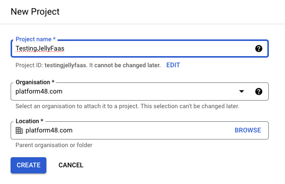
The search for SQL in the top search bar and navigate to 'Create an instance'
Select MySql on the left:
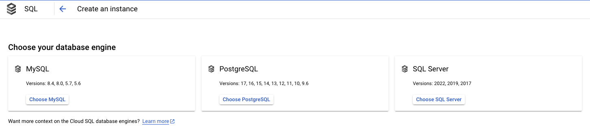
Information
You may need to enable an API if you have not used SQL before on this project.
Setup a MySQL instance, these are recommended for a testing. Make a note of the password.
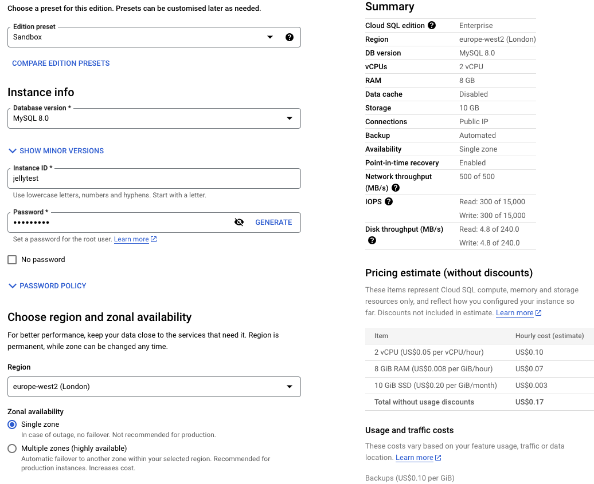
Once the instance is created, you can navigate to the users section and create a user:
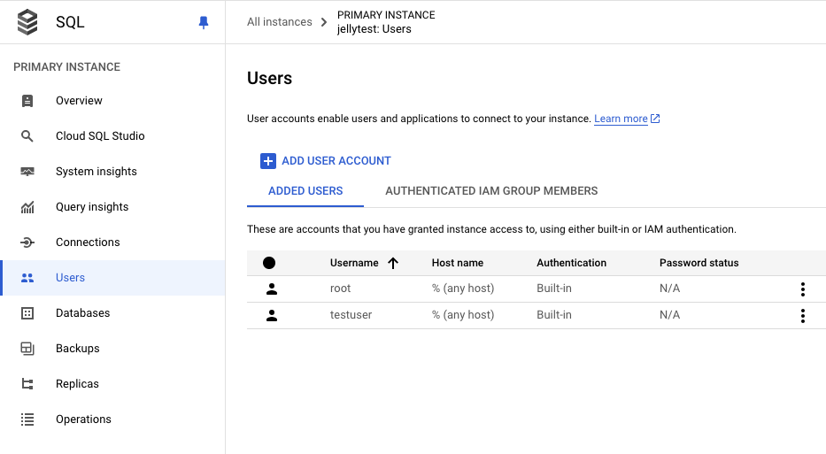
Then create a database schema:
Warning
NOTE: This step is important for security concerns, and JellyFaaS will only connect to SSL enabled databases
Now you need to ensure it has SSL connections enabled (this ensures the traffic is encrypted as JellyFaaS talks to the database)
Navigate to Connection and Security and enable SSL as follows:
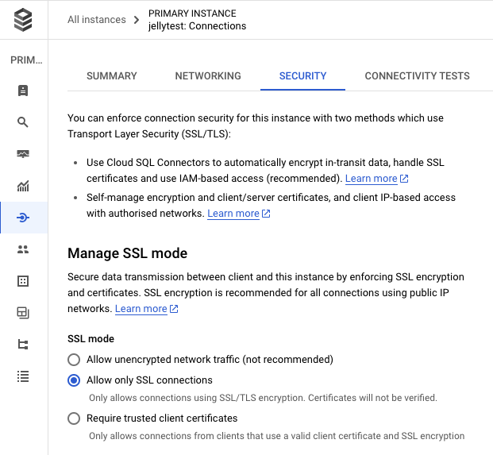
Warning
NOTE: In production you must limit this to a correct IP range, JellyFaaS runs from GCP, so enable those IP's
Allowed external access visit Connection and Networking and setup allow all:
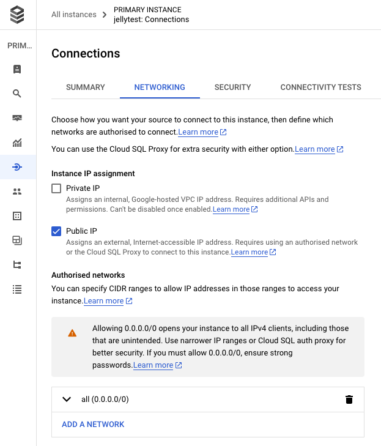
Finally go to 'Cloud SQL Studio' and login:
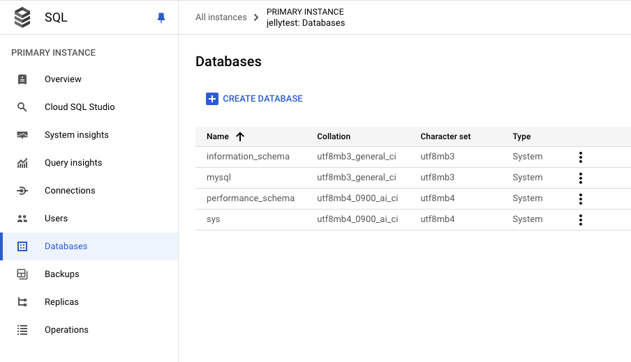
Setting up the Database
For this example we are going to import some data, a useful resource for datasets is Kaggle. For this simple example we are going to use the Top 100 TikTok Accounts of 2025 by Followers
Download the file here : TikTokFollowers.zip
Inside the file you will find a CSV file, the data looks like this:
| Rank | Username | Followers | Following | Uploads | Likes |
|---|---|---|---|---|---|
| 1 | Khabane lame | 162400000 | 78 | 1251 | 2500000000 |
| 2 | charli d'amelio | 155700000 | 1304 | 2812 | 11800000000 |
| 3 | MrBeast | 107500000 | 362 | 394 | 1100000000 |
| 4 | Bella Poarch | 94300000 | 649 | 771 | 2400000000 |
| 5 | Addison Rae | 88500000 | 1 | 318 | 5200000000 |
| 6 | TikTok | 83800000 | 1 | 1117 | 337200000 |
| 7 | Kimberly Loaiza | 83100000 | 378 | 2070 | 4100000000 |
| 8 | Zach King | 82100000 | 144 | 533 | 1200000000 |
| 9 | domelipa | 76700000 | 179 | 2408 | 5000000000 |
Now we need to create a table to hold the data.
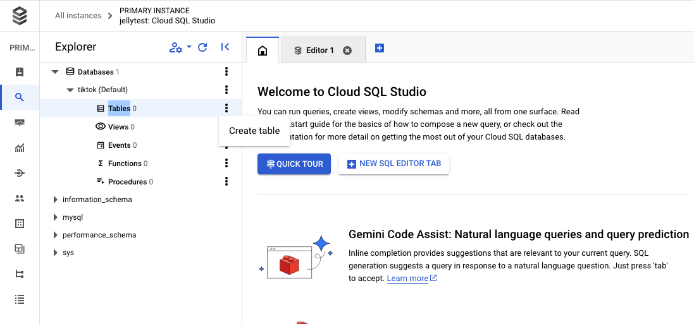
and run the following command:
CREATE TABLE tiktok_rankings (
`rank` INT PRIMARY KEY,
username VARCHAR(255),
followers BIGINT,
following INT,
uploads INT,
likes BIGINT
);
Information
Rank is a reserved word, so needs to be escaped.
How to create the Create table command? You can use AI with the top header row, and a couple of rows of data and the following prompt "Create a create table command for a mysql database using these headers using the data as a best guess for the field types"
Importing the test data
To import the data we need to upload it to a cloud bucket (you can remove after). Navigate to Google Cloud Buckets and create a bucket, and upload the file into the bucket.
Suggested settings, however use the bucket close to your geo-location.
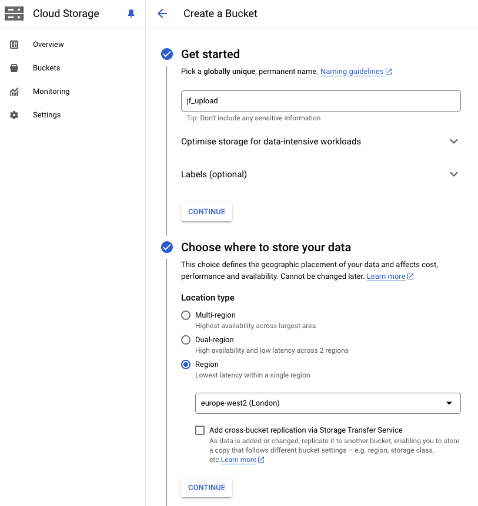
Then upload the file into the bucket.
Navigate back to the overview page in GCP, and select import from the menu on the right of the screen:
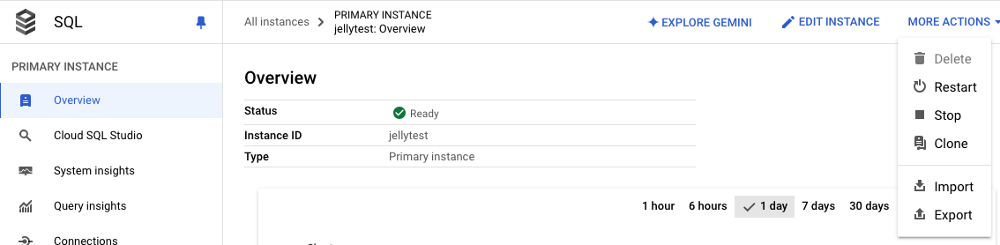
Then import the data:
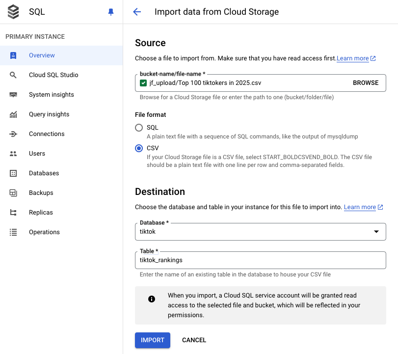
Querying the table
On the connections tab of the SQL database so we can see the connection information.
A MySql Connection string takes the following format:
It should then look something like this (with a different user/pass and IP address)
Information
Note, JellyFaaS has secrets management on its roadmap, enabling you to upload secrets that will be injected. Currently all traffic is SSL'd and we do not store any information from request bodies.
Using REST
I want to ask the following question:
Tell me about the top tiktok people, and something interesting about how many they follow vs uploads
Run the following curl, change the table name in the array, if you used a different table and the correct connections string from above:
curl --location 'http://localhost:8080/query-service/v1/rdbms' --header 'jfwt: <token>' --header 'Content-Type: application/json' --data-raw
'{
"query": "Tell me about the top tiktok people, and something intresting about how many they follow vs uploads",
"tables" : ["tiktok_rankings"],
"mysql_connection_string" :"testuser:<password>@tcp(35.197.207.152:3306)/tiktok"
}'
{
"answer": "This data reveals some interesting trends among top TikTok creators:\n\n**1. Huge Following, Minimal Following:** The majority of these creators follow a very small number of people compared to their massive follower counts. This suggests they're more focused on creating their own content and building their brand, rather than engaging with others on the platform. \n\n* **Jason Derulo:** Follows 34 people, with a whopping 652 million followers.\n* **Khabane Lame:** Follows 78 people, with 162 million followers.\n* **Addison Rae:** Follows just 1 person, with 88.5 million followers. \n\n**2. High Upload Volume:** These top creators consistently produce a significant amount of content. This is crucial for maintaining engagement and keeping their followers entertained.\n\n* **Carlos Feria:** Has a staggering 5,906 uploads, more than any other on this list.\n* **Charli D'Amelio:** With 2,812 uploads, she has consistently produced new content for her massive audience.\n* **MrBeast:** Even with a lower volume of uploads (394), his high-quality and attention-grabbing content keeps him at the top.\n\n**3. Different Strategies:** While they all have many followers, their approaches to content creation and engagement differ.\n\n* **Khabane Lame:** He's known for his silent comedy skits, suggesting he relies more on visual humor and fewer uploads. \n* **Addison Rae:** Her high number of likes (5.2 billion) despite a low upload count highlights the power of a large, engaged fan base and possibly stronger marketing strategies.\n\n**Overall:** This data demonstrates the variety of strategies that can lead to success on TikTok. It highlights the importance of creating engaging content, understanding your audience, and finding a unique style that resonates with viewers. \n",
"query": "Tell me about the top tiktok people, and something intresting about how many they follow vs uploads",
"spanId": "oEuXBGONg",
"messages": [
"completed"
]
}
If you got a error message 400 Bad Request, such as:
{ "answer": "", "query": "Tell me about the top tiktok people, and something interesting about how many they follow vs uploads", "spanId": "cdBCLGONR", "messages": [ "ISSUE: Failed to run the query. ADVICE: Please check the query and the data, QUERY: SELECT username, followers, following, uploads, likes, following - uploads AS \"following_minus_uploads\" FROM tiktok_rankings ORDER BY rank ASC LIMIT 10", "ISSUE: No tables found in the database. ADVICE: Please check the tables exist and the case is correct (case sensitive).", "failed" ] }
Try running again, this is just due to how AI Model doesn't always create a valid sql select statement, in this case (as mentioned above) it doesn't always escape the reserved keyword rank in the ORDER BY, even though internally (in JellyFaaS it is told to using structured data)
As you can see, any error message(s) are listed out to help you diagnose the problem, running again, will usually fix the issue, as the AI Model generates a working query.
Using the SDK
You can also ask the previous request using the following code:
Advanced features: Generating and running code
I want to generate Python code to create barchart about the information held in the database:
{
"query": "Get the number of likes for each username, using python create a barchart",
"tables" : ["tiktok_rankings"],
"mysql_connection_string" :"testuser:<password>@tcp(35.197.207.152:3306)/tiktok"
}
The following output is provided, we have omitted the explanation section of the code for brevity:
import matplotlib.pyplot as plt
data = [
{"likes": 2500000000, "username": "Khabane lame"},
{"likes": 11800000000, "username": "charli d'amelio"},
.
.
{"likes": 2500000000, "username": "ignacia Antonia??"}
]
usernames = []
likes = []
for item in data:
usernames.append(item['username'])
likes.append(item['likes'])
plt.figure(figsize=(20, 10)) # Adjust figure size as needed
plt.bar(usernames, likes)
plt.xticks(rotation=90) # Rotate x-axis labels for better visibility
plt.xlabel("Username")
plt.ylabel("Number of Likes")
plt.title("TikTok Usernames vs Number of Likes")
plt.tight_layout() # Adjust layout to prevent overlapping
plt.show()
After importing the imports and running we get :
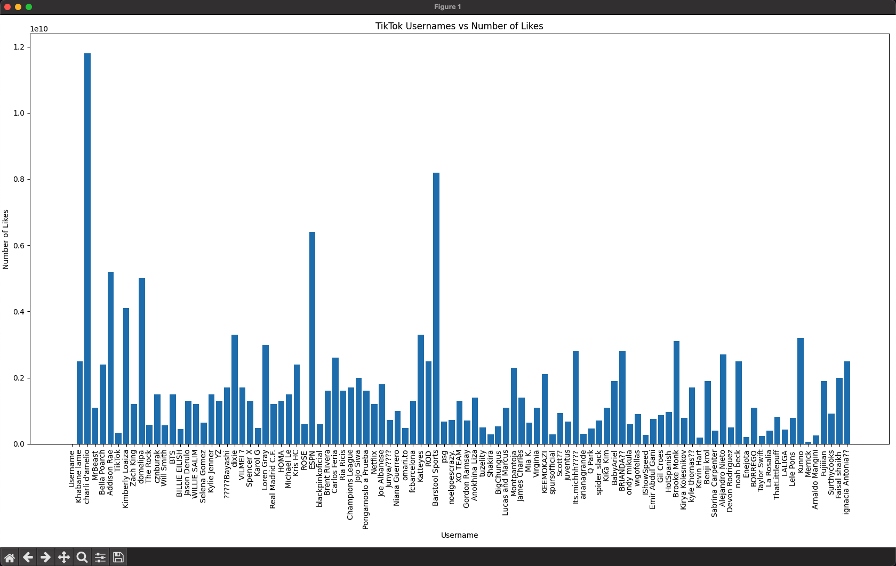
Other query options
REST Options, you can optionally set these when using the SDK too (see the SDK docs):
| Key | Required | Description |
|---|---|---|
| query | Y | The query to ask |
| tables | Y | The array of tables (or just one), that you want the model to have access too |
| mysql_connection_string | Y | The sql db connection string in the format: <username>:<password>@tcp(<ip>:3306)/<database> |
| ai_platform | N | Optional of Gemini (default, part of the product, or you can use your own) or OpenAI ChatGPT. |
| api+key | N | If you want to bring your own Secret key (for Gemini, or ChatGTP [required]) |
| structured_output | N | Base64 encoded JSON Schema representing the requested output model |